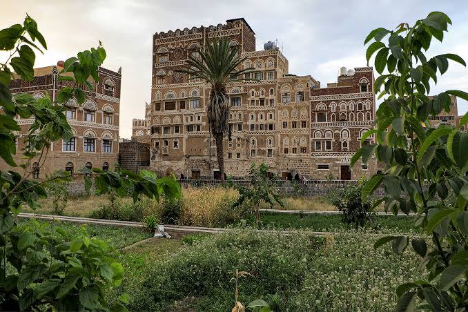

بستان القاسمي
الموقع: صنعاء القديمةرئة صنعاء القديمة وقلبها الأخضر النابض. يُعد بستان القاسمي أحد أكبر المقاشم (البساتين) التراثية المتنفسة داخل حارات صنعاء القديمة المسجلة ضمن قائمة التراث العالمي لليونسكو. يحيط بالبستان نسيج معماري فريد من المنازل الطينية الشاهقة المزدانة بالآجر والقمريات.
كان هذا البستان ولا يزال يمثل نظاماً بيئياً واجتماعياً متكاملاً، حيث يعتمد في سقايته على مياه المساجد المجاورة بعد استخدامها، وينتج خضروات وثماراً يستفيد منها سكان الحارة، مما يجسد مفهوم الاكتفاء الذاتي والتوازن البيئي الذي ابتكره الأجداد منذ مئات السنين.